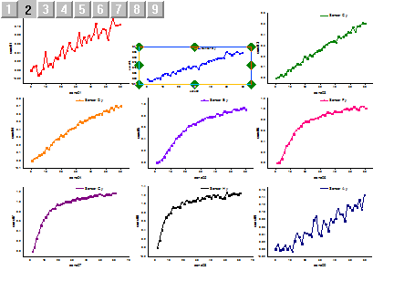

適用ボタンは設定をプレビューに適用し、実際のグラフには適用しません。プレビューグラフに適用された設定は、元に戻すボタンで戻すことができます。
OKボタンをクリックすると、アクティブグラフに設定が適用されます。
レイヤ管理ダイアログはアクティブグラフのレイヤの追加、編集、配置、レイヤリンク等を管理します。
|
適用ボタンは設定をプレビューに適用し、実際のグラフには適用しません。プレビューグラフに適用された設定は、元に戻すボタンで戻すことができます。 OKボタンをクリックすると、アクティブグラフに設定が適用されます。 |
| Note: Origin 2018b以降、複数レイヤグラフのための共通の表示機能が使用でき、これにより、同じグラフページ中の1つのレイヤを編集した内容を、ほかのグラフレイヤに適用することができます。
lこれにより、レイヤ管理ツールを使用して複数のレイヤを選択し、それらを一括で編集する場合、共通の表示設定を確認する必要があります。 |
レイヤ管理ダイアログでは、複数レイヤに同時に設定を適用できます。以下のサンプルで確認します。
レイヤ間で交換、位置合わせ、リンクの操作をするには、レイヤのインデックス番号を指定する必要があります。
| 操作 | ダイアログオプション |
|---|---|
| 交換 | サイズ/位置タブ: 交換 |
| 位置合せ | サイズ/位置タブ: 位置合せ |
| リンク | リンクタブ |
以下の操作でレイヤの交換を行います。
|
リンクしたレイヤを並び替えるとき、それらは1つの単位で扱われるので、並び替える（サイズ変更、位置変更）際には最初にリンクを解除し、並び替えた後に再びリンクの設定をします。 |
|
リンクの設定のために親レイヤを選択したとき、インデックス番号が小さいレイヤのみ親レイヤとして選択されます。最新のレイヤを親レイヤとして設定する場合、レイヤ選択パネルで順番を変更してください。 |
レイヤ管理ツールはアクティブグラフでレイヤを、追加、編集、サイズ変更、配置変更する等の管理ができます。
レイヤ管理ダイアログの追加タブで、異なる種類のレイヤを追加できます。
|
新しいレイヤにデータを追加するには、プロットをレイヤにドラッグアンドドロップするか、作図のセットアップダイアログを使用します。 |
特定のレイヤを削除するには、左パネルでレイヤを右クリックし、レイヤの削除を選択します。その後、適用をクリックしてOKをクリックします。
レイヤ管理ダイアログでは、レイヤ選択パネルで、レイヤインデックス番号の順番を変更できます。2重Y軸グラフでの例を見てみます。左下のグラフでは、緑の右Y軸の線+シンボルグラフがレイヤ1、オレンジの左Y軸の棒グラフがレイヤ2です。シンボルグラフを棒グラフの上に表示するために、2つのレイヤの順番を変えます。

レイヤ管理ダイアログを開き、レイヤ選択パネルでLayer2をLayerTopXRightY の上にドラッグします。Layer2がLayerTopXRightYの上に移動し、Layer1 という名前になります。適用ボタン、OKボタンをクリックしてダイアログを閉じます。
Note:再割り当ての操作によって、レイヤリンクの設定が外れてしまうことがあります。レイヤ管理ツールについての詳細は、laymanageXファンクションヘルプをご覧下さい。
レイヤがリンクされている場合、親レイヤのサイズを変更すると、全ての子レイヤのサイズも変更されます。
子レイヤを親レイヤにリンクする必要があります。リンク後、サイズ/位置タブを開いて、親レイヤを選択し、サイズ変更オプションを選択してサイズを変更します。適用をクリック後OKをクリックすると、親レイヤのサイズを参照して全ての子レイヤのサイズが変更されます。
また、複数レイヤグラフの親レイヤのサイズを直接変更することもできます。

子レイヤの内の一つのサイズを変更するには、リンクグループからレイヤを分離する必要があります。これを行うには、レイヤ管理ダイアログを開き、レイヤ選択パネルで特定の子レイヤを選択して、リンクタブのドラッグして位置を変えると関連のレイヤも位置が変わるのチェックボックスのチェックを外します。適用ボタン、OKボタンをクリックします。
そして、分離された子レイヤのサイズ変更をします。方法は、上述の親レイヤのサイズ変更と同様です。レイヤ管理ダイアログでレイヤを選択し、サイズ/位置タブで、サイズ変更を行なうか、グラフ上で8つのハンドルを使って直接変更することもできます。

Note: 子レイヤでリンクタブのドラッグして位置を変えると関連のレイヤも位置が変わるのチェックボックスにチェックが付いている場合、この子レイヤのサイズを変更すると、全てのリンクレイヤのサイズも変更されます。
複数レイヤグラフのレイヤ位置とレイアウトの調整にはいくつかの方法があります。レイヤ管理ダイアログの配置タブを開き、ギャップやレイアウトを設定できます。下図では、複数レイヤグラフを3*3レイアウトで、ギャップのないグラフに設定しています。適用をクリックして、プレビューを確認し、OKをクリックします。
|
間隔や、列/行の数等の設定を含む、レイアウト編集の前に、親レイヤと子レイヤ間の全てのリンクを解除する必要があります。 |